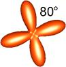
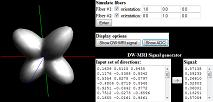
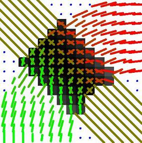
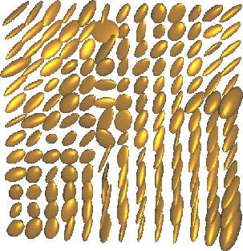
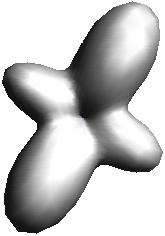
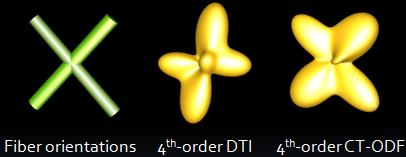

[Citation] A.Barmpoutis, "Tutorial on Diffusion Tensor MRI using Matlab", Electronic Edition, University of Florida, 2010. Accessed: https://abarmpou.github.io/fanDTasia/tutorial.html
The following subjects are covered in this tutorial: Generation of Synthetic Diffusion-Weighted MRI datasets, Diffusion Tensor (DTI) Estimation from DW-MRI, Visualize DTI as a field of ellipsoids, Higher-order Diffusion Tensor Estimation from DW-MRI, Compute Tensor Orientation Distribution Functions (Tensor ODF), Compute Fiber Orientations. The latest version of fanDTasia free Matlab library for DW-MRI analysis is required.
If you are not a Matlab user you can still read this tutorial and use the Java implementation of fanDTasia toolbox instead.
Before we start running any Diffusion Tensor experiment in Matlab, we first need
to open a Diffusion-Weighted MRI (DW-MRI) dataset using the appropriate Matlab command or script.
The DW-MRI datasets can be found in various different formats, depending on the brand of the MRI scanner that was used for data acquisition (e.g. Bruker, GE, Siemens, etc).
In most data formats, the DW-MRI dataset is given in (at least) two separate files, one describing the acquisition parameters (such as the orientations of magnetic gradients,
the diffusion weighting b-value, etc.) and one containing the acquired images in a binary format.
In this tutorial, in order to avoid any format-specific limitation, we will directly define a DW-MRI dataset in terms of Matlab variables as follows:
1) GradientOrientations is a matrix of size Nx3, which contains the
list of the diffusion sensitizing magnetic gradient orientations.
2) b_value is a vector of size Nx1, which contains the corresponding
list of diffusion weighting b-values.
3) S is a matrix of size sizeX x sizeY x num_of_slices x N,
which contains the acquired DW-MR signal responses,
where N is the number of acquired volumes (which is usually equal to the number of magnetic gradients),
num_of_slices is the number of 2D slices in each acquired volume, and each 2D slice is of size sizeX x sizeY.
In the next sections we will see how to load GradientOrientations, b_value, and S
by opening a real DW-MRI dataset or by generating synthetic DW-MR images using simulation of the DW-MR signal attenuation.
In our experiments we will use the demo DW-MRI dataset of a rat optic chiasm (Reference), which is available to download from here.
This dataset is in the simple and generic fanDTasia format (.FDT). More details on the specifications of this file format can be found here.
After downloading this demo dataset, we can open it in Matlab using the following commands (note that the fanDTasia Matlab library is required).
Use this code
S=openFDT('fandtasia_demo.fdt'); params=[...copy here the contents of fandtasia_demo.txt...]; GradientOrientations=params(:,[1:3]); b_value=params(:,4);
By clicking on one of the pink check boxes that appear on the side of each Matlab script in this tutorial, you copy the corresponding commands to the
Matlab script generator on the left of this window. After selecting several Matlab script fragments, you can copy the generated list of commands from the
left window and paste them directly to your Matlab command prompt or save them as a Matlab script file (.m).
You can check the size of the dataset by using the size(S) command.
This particular demo dataset contains 47 acquired volumes, each volume has only 1 slice of size 32x32.
A DW-MRI slice can be viewed by using the following Matlab script. This script visualizes the 1st slice of the 2nd volume in our dataset (i.e. S(:,:,1,2)),
and the result is shown in the image on the right.
So far we have learnt how to visualize the image part of the DW-MRI dataset. What about the acquisition parameters of the dataset?
We can observe the set of magnetic gradient orientations by plotting them as points on the unit sphere. For example, the figure on the right shows the diffusion sensitizing
magnetic gradient orientations that were used in the the acquisition process. You can see how well the set of points is distributed on the unit sphere.
Note that in order to achieve a better visualization we plot both antipodal points for each gradient orientation.
This plot appears in Matlab in 3D, so you can rotate it appropriately in order to achieve a better viewing angle.
Such a plot is useful in DW-MRI processing in order to make sure that the acquisition protocol that you have followed samples uniformly the space of orientations,
otherwise your results may be biased towards a specific orientation.
The set of Matlab commands that plot the magnetic gradient orientations is the following:
As it was mentioned earlier, in this tutorial we will not restrict our discussion to any specific file format. Depending on the format of your data, you can use the appropriate
file handler/decoder in order to load your dataset in Matlab. Your script will probably look like the following generic Matlab pseudocode that you can use as a guideline.
Use this code
S=...open the DW images using the appropriate format decoder...; GradientOrientations=[...copy here the gradient orientations...]; b_value=[...copy here the list of b-values...];
When you need to perform a quantitative comparison and validation of a DW-MRI processing technique, it is better to apply your method to a synthetic DW-MRI dataset rather than a real one.
The reason is that in a synthetic DW-MRI dataset you know exactly the underlying axonal fiber geometries (since you have synthesized the dataset), and therefore you can easily
compare your results with the ground truth. In this section we will see how to generate a realistic synthetic DW-MRI dataset using Matlab.
First of all, like in the real data case, we need to specify our acquisition parameters (at least the b-values and the set of magnetic sensitizing gradient orientations).
The following script creates a set of 22 b-values and orientations, the first one corresponds to a low diffusion weighting (i.e. S0) and the rest of 21 have the same
b-value=1500s/mm2. The 21 orientations were computed by tessellating the icosahedron on the unit hemi-sphere.
Larger sets of gradient orientations can be constructed by altering slightly the previous Matlab script as it is shown below. These two modified scripts
produce sets of 81 and 321 vectors respectively, by tessellating the icosahedron on the unit hemi-sphere.
Important note: You cannot obtain vector sets of
arbitrary size using this code. The way it is written works only for 6, 21, 81 and 321 gradient orientations.
Having specified the acquisition parameters, we can now simulate the Diffusion-Weighted MR signal response that corresponds to certain underlying fiber geometry.
For instance, we can simulate the DW-MR signal response from a single axonal fiber, or from a more complex fiber structure such as a fiber crossing.
Let's begin with a simple example that generates a DW-MRI dataset of 1 voxel only, which voxel corresponds to a 2-fiber crossing. Therefore, we need first to define the
orientations of these two fibers. In our experiment we will define these orientations in the X-Y plane at 20 and 100 degrees respectively as it is shown in the
illustration on the right. You can easily see that in this configuration the two fibers form an angle of 80 degrees between them. Then, we need to simulate the DW-MR signal
response for each gradient orientation in our protocol as follows:

Use this code
fiber_orientation1=[cos(20*pi/180) sin(20*pi/180) 0]; fiber_orientation2=[cos(100*pi/180) sin(100*pi/180) 0]; S=ones(1,1,1,size(GradientOrientations,1)); for i=2:size(GradientOrientations,1) S(1,1,1,i)=S(1,1,1,1)*(SimulateDWMRI(fiber_orientation1,GradientOrientations(i,:))+ SimulateDWMRI(fiber_orientation2,GradientOrientations(i,:)))/2; end
Note that in the "for" loop we skipped the first gradient orientation because it corresponds to the S0 image (without diffusion weighting). The S0 value is stored in S(1,1,1,1)
and should be defined just before entering into the "for" loop. In the above script S0, was defined to be equal to 1.

So far we have synthesized a DW-MRI dataset of 1-voxel only. In the next section we will see how to generate a whole DW-MRI field by extending the above simulation process.
When you design a field of axonal fiber tracts you actually define the underlying fiber orientations at each voxel of the field.
Depending on your design, there may be some voxels with 1 distinct fiber orientation, others with 2 or 3 distinct fiber orientations etc. The goal is to
create a field with a variety of fiber structures such as crossing and splaying fibers in order to test multi-fiber reconstruction methods or tractographic techniques.
The figure on the right depicts a simple example of 2 fiber bundles crossing each other at the center of the field. Notice that one of the fiber bundles is curved so that the
crossing corresponds to various intersection angles between the fibers at each voxel. The plot shown in this figure was created using the
fanDTasia Java applet.
The following Matlab script creates a 2D field of size 32x32. There are 2 "for" loops running for all x,y locations in the field. The first "if" statement corresponds to the
curved fiber bundle, and the second "if" statement corresponds to the straight diagonal fiber bundle.

Use this code
S=ones(32,32,1,size(GradientOrientations,1)); for i=2:size(GradientOrientations,1) for x=1:32 for y=1:32 f1_flag=0; f2_flag=0; if x*x+y*y>16*16 & x*x+y*y<32*32 v=[y/x -1 0];v=v/sqrt(v*v'); fiber_orientation1=v;f1_flag=1; end if x<y+10 & x>y-10 fiber_orientation2=[sqrt(2)/2 sqrt(2)/2 0];f2_flag=1; end if f1_flag==0 & f2_flag==1 fiber_orientation1=fiber_orientation2; elseif f1_flag==1 & f2_flag==0 fiber_orientation2=fiber_orientation1; elseif f1_flag==0 & f2_flag==0 fiber_orientation1=[0 0 1];fiber_orientation2=[0 0 1]; end S(x,y,1,i)=S(x,y,1,1)*(SimulateDWMRI(fiber_orientation1,GradientOrientations(i,:))+ SimulateDWMRI(fiber_orientation2,GradientOrientations(i,:)))/2; end end end
The above script can be easily extended to generate a 3D DW-MRI field by adding one more "for" loop. Finally, you can add as many fiber bundles to your dataset as you prefer by
adding "if" statements similarly to those in the previous Matlab script.
After having opened a Diffusion-Weighted MRI (DW-MRI) dataset in Matlab, we can estimate a field of Diffusion Tensors, known as Diffusion Tensor Image (DTI).
A Diffusion Tensor is a 3x3 symmetric positive-definite matrix which can be estimated at each voxel of the DW-MR dataset by using the acquired DW-MR signal responses.
There are several ways we can proceed. The simplest way is to estimate the Diffusion Tensor coefficients by solving a linear system. However it is known that this approach
may produce negative-valued diffusivities, which is unnatural and may lead to inaccurate fiber orientation estimations.
All the above problems can be avoided if we convert the problem into a linear system with non-negative constraints. This algorithm guarantees that the estimated tensors
are positive-definite or at least semi-definite and it is very fast due to the linearity of the problem. For more technical details the reader is referred to the article
in which this method was first presented (International Symposium on Biomedical Imaging, 2010).
An implementation of this algorithm is given by the following Matlab script. This script estimates a field of Diffusion Tensors "DTI"
and the zero-gradient image "S0", given a dataset of DW-MRI signal responses "S",
the corresponding list of diffusion sensitizing
magnetic gradient orientations "GradientOrientations", and the list of diffusion weighting b "b_value".
Use this code
G=constructMatrixOfMonomials(GradientOrientations, 2); C=constructSetOf81Polynomials(2)'; P=G*C;P=[-diag(b_value)*P ones(size(GradientOrientations,1),1)]; DTI=zeros(3,3,size(S,1),size(S,2));S0=zeros(size(S,1),size(S,2)); for i=1:size(S,1) for j=1:size(S,2) y=log(squeeze(S(i,j,1,:))); x=lsqnonneg(P, y); T = C * x([1:81]); UniqueTensorCoefficients(:,i,j)=T; DTI(:,:,i,j)=[T(6) T(5)/2 T(4)/2 T(5)/2 T(3) T(2)/2 T(4)/2 T(2)/2 T(1)]; S0(i,j)=exp(x(82)); end end
The above script produces a 2D field of Diffusion Tensors which corresponds to the first slice in the acquired DW-MRI volume.
You can easily extend this script in order to cover the full 3D volume, by adding one more "for" loop to the two existing "for" loops.
The estimated Diffusion Tensors are stored in the matrix "DTI" of size
3x3xSizeXxSizeY, where SizeX and SizeY are the dimensions of each slice in the DW-MRI dataset.
Furthermore, the estimated zero-gradient image "S0" can be viewed as a regular DW-MRI image using Matlab, as we have seen in Section 1.
It is quite common to include in your data scanning protocol, the acquisition of an S0 image.
Usually, this image is very clean (with high signal to noise ratio) due to the averaging of several acquisitions in the protocol and therefore there is no need to re-estimate S0
during the DTI estimation process.
The following Matlab script is a simple modification of the previous DTI estimation script and does not estimate S0. Instead, the acquired S0 image is employed by the algorithm.
Without loss of generality we assume that the S0 image is stored in the first volume of the DW-MRI dataset, i.e. S(:,:,:,1).
Therefore, the first gradient orientation as well as the first b-value are excluded from the calculations.
Use this code
S0=S(:,:,:,1); S=S(:,:,:,[2:length(b_value)]); GradientOrientations=GradientOrientations([2:length(b_value)],:); b_value=b_value([2:length(b_value)]); G=constructMatrixOfMonomials(GradientOrientations, 2); C=constructSetOf81Polynomials(2)'; P=G*C;P=-diag(b_value)*P; DTI=zeros(3,3,size(S,1),size(S,2)); for i=1:size(S,1) for j=1:size(S,2) y=log(squeeze(S(i,j,1,:)/S0(i,j,1))); x=lsqnonneg(P, y); T = C * x; UniqueTensorCoefficients(:,i,j)=T; DTI(:,:,i,j)=[T(6) T(5)/2 T(4)/2 T(5)/2 T(3) T(2)/2 T(4)/2 T(2)/2 T(1)]; end end
An interesting question that may arise is the following: What if I have an acquired S0 image and I use the algorithm that re-estimates S0 along with the tensors?
What is the difference between the estimated and the acquired S0? In practice there is no visual difference. The only reason for re-estimating S0 is the absence of
a reliable S0 image from the original DW-MRI dataset. That means that either we have S0 but it is very noisy, or we do not have S0 image at all and instead of acquiring S0 we have collected a dataset with a low b-value (say 100s/mm2).
Having estimated the DTI field from the given DW-MRI dataset, we can now easily compute several quantities from the Diffusion Tensors.
The mean diffusivity, the eigen values, and the fractional anisotropy are some of the quantities that can be computed from the tensors and have been widely used in tensor field processing algorithms.
The mean diffusivity is a scalar and corresponds to the trace of the Diffusion Tensor divided by 3. The following Matlab script shows how to compute the mean diffusivity at voxel (10,20).
You can repeat this process in order to compute the mean diffusivity at each voxel of the DTI field.
The following Matlab script shows how to compute the eigenvectors and eigenvalues from the diffusion tensor at voxel (10,20). The eigenvalues are stored in the variable "l".
Use this code
i=10;j=20; [eigenvectors,l]=eig(DTI(:,:,i,j));
For instance the second eigenvector is stored in eigenvectors(:,2) and the second eigenvalue is stored in l(2,2).
The fractional anisotropy can be computed as a function of the eigenvalues. The fractional anisotropy is a real number between 0 and 1 and takes the value 0 if the tensor corresponds
to an isotropic tensor, and it takes higher values for anisotropic cases. The following Matlab script shows how to compute the fractional anisotropy from the given eigenvalues.
You can easily add "for" loops to the above script in order to repeat the eigenvalue decomposition and the fractional anisotropy calculation step for every voxel in the DTI field.
In the next section we will see how to produce nice plots of diffusion tensor fields using Matlab.
In the previous sections we learnt how to open a Diffusion-Weighted MRI dataset in Matlab and how to estimate a Diffusion Tensor field from it.
The estimated diffusion tensor field is a matrix-valued image (i.e. there is a matrix at each pixel/voxel of the image) and therefore it is not straight forward how to
assess visually the estimated tensor field. One way to visualize the tensor field is to compute a scalar value from each tensor (such as the mean diffusivity or the
fractional anisotropy) and display it as a regular grey-scale image, as we saw in Section 1.
Another more descriptive way of visualizing a tensor field is to plot the Gaussian ellipsoids or the corresponding primary eigenvectors. Each tensor corresponds to the
covariance matrix of a Gaussian, which have an ellipsoidal contour. The orientation of the ellipsoid is controlled by the eigenvectors of the tensor, and its size is proportional
to the eigenvalues of the tensor. In this visualization, the isotropic tensors appear as spheres and the anisotropic tensors appear as sharp ellipsoids oriented parallel to
the primary eigenvector (see the figure on the right).
An ellipsoidal visualization can be easily created by Matlab using the following command. The DTI field should be stored in a matrix of size 3 x 3 x ...
similarly to the tensor fields computed by the scripts in Section 2. The second argument of plotDTI defines the spacing between the tensors, and it can be also thought as
inversely proportional to the scale of the ellipsoids. A very large number will make the ellipsoids look tiny, a very small number will make the ellipsoids so large so
they will overlap each other. You can adjust this scaling factor according to your aesthetics.

Use this code
plotDTI(DTI,0.002);
Sometimes it is preferred to plot the tensor field in a Region of Interest (ROI) only. A rectangular ROI can be defined as it shown in the following Matlab script.
The ROI in this particular example corresponds to the rectangle of size 19 x 17 formed between the pixel locations (x,y)=(10,14) and (28,30).
You can add more features to the plotDTI and plotTensors functions according to your needs (such as choose a different color) by editing appropriately the plotDTI.m or plotTensors.m files.
The discussion in the previous sections was mainly focused on how to use the Diffusion Tensor model for processing Diffusion-Weighted MR images. The Diffusion Tensor model can be seen as a
quadratic polynomial since it corresponds to a 2nd-order tensor. It is known that low order polynomials, although are robust due to the small number of unknown parameters,
are not "flexible" enough and therefore they cannot approximate more complex functions. In DW-MRI datasets it is quite common to find complex underlying fiber structures such
as fiber crossings, which cannot be modeled by 2nd order DTI. Hence, one has to employ higher order approximations (an example of a 4th-order tensor is shown in the figure on the right).
In this section we will see how to estimate higher-order tensors using Matlab. The higher-order tensor estimation algorithm extends the DTI estimation method (see Section 2) and guarantees that the estimated higher-order tensors
are positive-definite or at least semi-definite and it is very fast due to the linearity of the problem. For more technical details the reader is referred to the article
in which this method was first presented (International Symposium on Biomedical Imaging, 2010).
An implementation of this algorithm is given by the following Matlab script. This script estimates a field of 4th-order Diffusion Tensors coefficients "UniqueTensorCoefficients"
and the zero-gradient image "S0", given a dataset of DW-MRI signal responses "S",
the corresponding list of diffusion sensitizing
magnetic gradient orientations "GradientOrientations", and the list of diffusion weighting b "b_value".

Use this code
order=4; G=constructMatrixOfMonomials(GradientOrientations, order); C=constructSetOf321Polynomials(order)'; P=G*C;P=[-diag(b_value)*P ones(size(GradientOrientations,1),1)]; S0=zeros(size(S,1),size(S,2)); for i=1:size(S,1) for j=1:size(S,2) y=log(squeeze(S(i,j,1,:))); x=lsqnonneg(P, y); UniqueTensorCoefficients(:,i,j) = C * x([1:321]); S0(i,j)=exp(x(322)); end end
The above script produces a field of 4th-order Diffusion Tensors, which corresponds to the first slice in the acquired DW-MRI volume.
The estimated higher-order Diffusion Tensors are stored in the matrix "UniqueTensorCoefficients" of size
NxSizeXxSizeY, where N is the number of unique tensor coefficients in the tensor, and SizeX and SizeY are the dimensions of each slice in the DW-MRI dataset.
For example, in the 4th-order tensor case the number of unique coefficients is N=15, while in the 2nd-order tensor case we have N=6. The estimated zero-gradient image "S0" can be viewed as a regular DW-MRI image using Matlab, as we have seen in Section 1.
Similarly to the DTI estimation case, it is quite common to acquire an S0 image along with the Diffusion-Weighted images in a DW-MRI dataset.
In this case there is no need to re-estimate S0 during the higher-order DTI estimation process (see discussion on this topic in Section 2).
The following Matlab script is a simple modification of the previous higher-order Diffusion Tensor estimation script and does not estimate S0. Instead, the acquired S0 image is employed by the algorithm.
Without loss of generality we assume that the S0 image is stored in the first volume of the DW-MRI dataset, i.e. S(:,:,:,1).
Therefore, the first gradient orientation as well as the first b-value are excluded from the calculations.
Use this code
order=4; S0=S(:,:,:,1); S=S(:,:,:,[2:length(b_value)]); GradientOrientations=GradientOrientations([2:length(b_value)],:); b_value=b_value([2:length(b_value)]); G=constructMatrixOfMonomials(GradientOrientations, order); C=constructSetOf321Polynomials(order)'; P=G*C;P=-diag(b_value)*P; for i=1:size(S,1) for j=1:size(S,2) y=log(squeeze(S(i,j,1,:)/S0(i,j,1))); x=lsqnonneg(P, y); UniqueTensorCoefficients(:,i,j) = C * x; end end
After having estimated the coefficients of the Higher-Order Diffusion Tensors, we can compute several quantities from them such as the Mean Diffusivity, or the Generalized Anisotropy.
But first let's understand a little bit more the meaning of the higher-order tensor coefficients.
There are various ways of denoting the coefficients of a 4th-order tensor in 3 dimensions. The standard Einstein's notation and has the form T(i,j,k,l) where
the indices i,j,k,l take values from 1 to 3. Therefore there are 3 power 4 = 81 tensor coefficients. For instance if we assume that x,y,z dimensions correspond to the indexing 1,2,3
then T(1,1,1,1) is the tensor coefficient that corresponds to the basis x*x*x*x, T(1,2,1,2) corresponds to the basis x*y*x*y and T(1,1,2,2) corresponds to the basis x*x*y*y.
If the tensor has full symmetry, then certain coefficients are equal to each other. For example T(1,2,1,2)=T(1,1,2,2)=T(2,1,2,1)=T(2,2,1,1)=T(1,2,2,1)=T(2,1,1,2).
Hence, one has to use external mechanisms to impose these equality constraints.
This problem can be avoided if we use a different notation that comes from the
standard notation of forms. In this notation the 4th-order tensor coefficients have the form D(p,q,r), where the p,q,r indices correspond to the power of x,y,z in the basis respectively.
In this notation we have p+q+r=4. For instance D(4,0,0) corresponds to the basis x*x*x*x, and D(2,2,0) corresponds to the basis x*x*y*y. It can be easily seen that there is no ambiguity regarding the symmetry
in this notation. The number of coefficients in this case is only 15 compared to the 81 coefficients in the standard Einstein's notation.
A simple question that one may ask is how to convert the coefficients from one form to the other? The answer is easy.
You have to equate the coefficients of the equivalent monomials. For example T(1,1,1,1) and D(4,0,0) both correspond to the monomial x*x*x*x, therefore are equal to each other.
The coefficients T(1,2,1,2), T(1,1,2,2), T(2,1,2,1), T(2,2,1,1), T(1,2,2,1), T(2,1,1,2) on the one hand, and the D(2,2,0) on the other, correspond to the monomial x*x*y*y, therefore
we can establish the relationship D(2,2,0)=6*T(1,2,1,2)=6*T(1,1,2,2)=... etc. The multiplication factor can be easily computed in matlab by using the function
population(p,q,r,order).
For instance, in the previous examples, the function population(2,2,0,4) produces the result 6,
while the function population(4,0,0,4) produces the result 1.
The higher-order Diffusion Tensor coefficients produced by the previous Matlab scripts are in the symmetric form.
Therefore, in the 4th-order case there are 15 unique tensor coefficients. You can print the tensor coefficients of the voxel (1,1) in the Matlab prompt screen by using the following command.
Similarly to the 2nd-order DTI, the mean diffusivity can by computed from the higher-order tensor coefficients. The following Matlab script shows how to compute the mean diffusivity at voxel (1,1).
You can repeat this process in order to compute the mean diffusivity at each voxel of the high-order Diffusion Tensor field.
The generalized anisotropy can be also computed from the higher-order tensor coefficients. The fractional anisotropy is a real number that becomes 0 if the higher-order tensor corresponds
to an isotropic tensor, and it takes higher values for anisotropic cases. The following Matlab script shows how to compute the generalized anisotropy that corresponds to the pixel (1,1).
You can easily add "for" loops to the above script in order to repeat the generalized anisotropy calculation step for every voxel in the higher-order diffusion tensor field.
In section 2, we saw how to compute the primary eigenvector of a 2nd order Diffusion Tensor, which vector corresponds to the primary orientation of diffusion.
However, the primary eigenvector is reliable only in the case of simple fiber structures and fails in the presence of fiber crossings. Higher-order Diffusion Tensors
are able to approximate well both simple and complex fiber structures as we saw in Section 4. The question that one may ask is how can we compute the fiber orientations from a
4th-order tensor?
It is known that the peaks of the higher-order Diffusion Tensors do not correspond to the underlying distinct fiber orientations.
Instead, one should find the maxima of the corresponding water molecule displacement probability or the maxima of the Orientation Distribution Function (ODF). In this section
we will compute the ODF expressed in a tensor form (Cartesian Tensor ODF) using Matlab given a Diffusion-Weighted MRI (DW-MRI) dataset.

The following Matlab script computes a field of CT-ODFs "TensorODF"
from a given dataset of DW-MRI signal responses "S",
the corresponding list of diffusion sensitizing
magnetic gradient orientations "GradientOrientations", and the list of diffusion weighting b "b_value".
The CT-ODF order here was chosen to be 4. You can see that the script looks very similar to
the one that computes high-order Diffusion Tensors in Section 4. For more technical information, the reader is referred to the corresponding article on CT-ODFs that can be found
here: (International Conference on Medical Image Computing and Computer Assisted Intervention - 2010).
Use this code
order=4; S0=S(:,:,:,1); S=S(:,:,:,[2:length(b_value)]); GradientOrientations=GradientOrientations([2:length(b_value)],:); b_value=b_value([2:length(b_value)]); G=constructMatrixOfMonomials(GradientOrientations, order); C=constructSetOf321Polynomials(order)'; BG=constructMatrixOfIntegrals(GradientOrientations, order, 100); P=BG*C; for i=1:size(S,1) for j=1:size(S,2) y=squeeze(S(i,j,1,:)/S0(i,j,1)); x=lsqnonneg(P, y); TensorODF(:,i,j) = C * x; end end
The above script computes a 2D field of 4th-order CT-ODFs, which corresponds to the first slice in the acquired DW-MRI volume.
The estimated ODF coefficients are stored in the matrix "TensorODF" of size
NxSizeXxSizeY, where N is the number of unique tensor coefficients in the tensor ODF, and SizeX and SizeY are the dimensions of each slice in the DW-MRI dataset.
For example, in the 4th-order tensor ODF case the number of unique coefficients is N=15, while in the 2nd-order tensor ODF case we have N=6.
By using the previous Matlab script we can compute CT-ODFs directly from the given DW-MRI datasets. However it is possible to compute CT-ODFs from the
higher-order Diffusion Tensors as well. Below we will convert a given 4th-order Diffusion Tensor to a 4th-order Tensor ODF. Assume that the coefficients of a
4th-order Diffusion Tensor are given in the following vector form. The ordering of the tensor coefficients is the same as the one produced by the higher-order
Diffusion Tensor estimation algorithm in Section 4.
The following Matlab script computes the coefficients of the CT-ODF that corresponds to the given higher-order Diffusion Tensor. The computed CT-ODF coefficients
are stored in the vector "TensorODF".
The above Matlab script can be repeated using appropriate "for" loops in order to convert a whole field of higher-order Diffusion Tensors into a field of higher-order Tensor ODFs.
Keep in mind that the maxima of the computed Tensor ODFs correspond to the fiber orientations, while the maxima of the higher-order Diffusion Tensors do not.
Therefore, the above conversion of DTs to CT-ODFs may be quite useful during data processing.
After having estimated the CT-ODFs, we can print the tensor ODF coefficients of the voxel (1,1) in the Matlab prompt screen by using the following command.
The output will be displayed in the same form as the Diffusion Tensor coefficients in Section 4.
Use this code
printTensor(TensorODF(:,1,1),order);
The critical orientations (i.e. maxima, minima, etc.) of a 4th-order tensor can be computed by the following function, which generalizes the eigenvector computation in higher-order cases.
Use this code
[orientations,l]=eig_dt4(TensorODF(:,1,1));
The values in "l" correspond to the values obtained by evaluating the CT-ODF along the computed orientations. In the next section we will setup a
full multi-fiber reconstruction experiment and we will employ 4th-order tensor ODFs in order to compute the underlying fiber orientations.
In this section we will design the full pipeline of a synthetic DW-MRI quantitative experiment in Matlab. In this experiment we will simulate the
DW-MRI signal of a fiber crossing and then we will add various levels of noise to the dataset in order to test how accurate are the fiber orientations estimated
by performing multi-fiber reconstruction using higher-order tensor ODFs.
The first step in our experiment is to generate the synthetic DW-MRI dataset. The following Matlab script simulates the DW-MRI signal that corresponds to a 2-fiber crossing
(the fiber orientations are illustrated in the figure on the right) using a list of 21 Gradient Orientations that we have also defined. More details on how to generate synthetic
DW-MRI datasets can be found in Section 1.
Note that the previous script generates a dataset of 1 voxel only and 21 gradient directions. After having simulated the DW-MRI signal of the fiber crossing we can add
various levels of noise to it. The following script simulates a Riccian type noise model of a typical standard deviation level of 0.01 denoted by "sigma".
Use this code
sigma=0.01; for i=1:size(GradientOrientations,1) S(i)=sqrt((S(i)+sigma*randn(1))^2+(sigma*randn(1))^2); end
After that, the noisy DW-MRI signal is given to the multi-fiber reconstruction algorithm that computes higher-order Cartesian Tensor-ODFs as we have seen in Section 5.
In our case we use order-4 and the computed 15 tensor ODF coefficients are stored in the vector "TensorODF".
From the estimated tensor ODF coefficients we can compute the underlying distinct fiber orientations and compare them with the ground truth fiber orientations that we
had defined when we generated the synthetic DW-MRI dataset. The following Matlab script computes the fiber orientation error angle in degrees.
The above experiment can be repeated for several noise samples and several noise levels by easily adding "for" loops to the appropriate scripts.
If you consider noise levels in the range 0.02-0.12 and repeat the experiment for 100 times per noise level, you will be able to display the obtained results using an errorbar
as shown in the figure on the right.
This plot was created using the Matlab function errorbar. The vertical lines depict the standard deviation of the observed
fiber orientation angle error. The line that connects the vertical bars shows the mean fiber orientation error for each noise level. As expected, the fiber reconstruction error
increases with the standard deviation of the noise in the dataset.